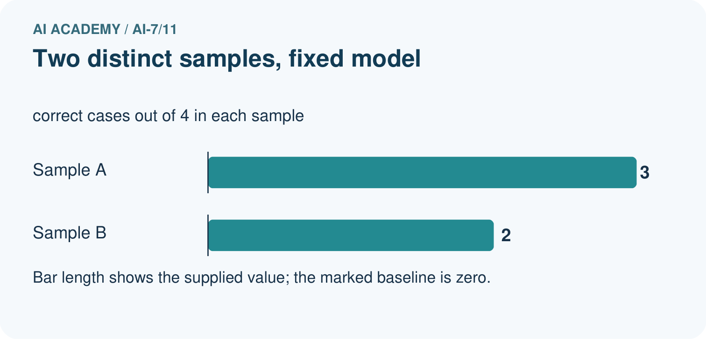
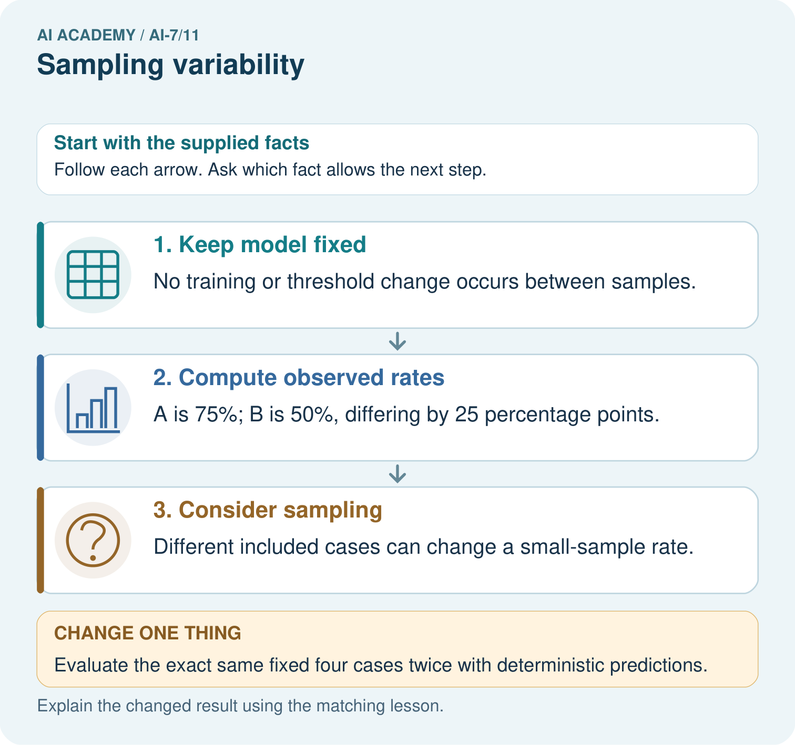
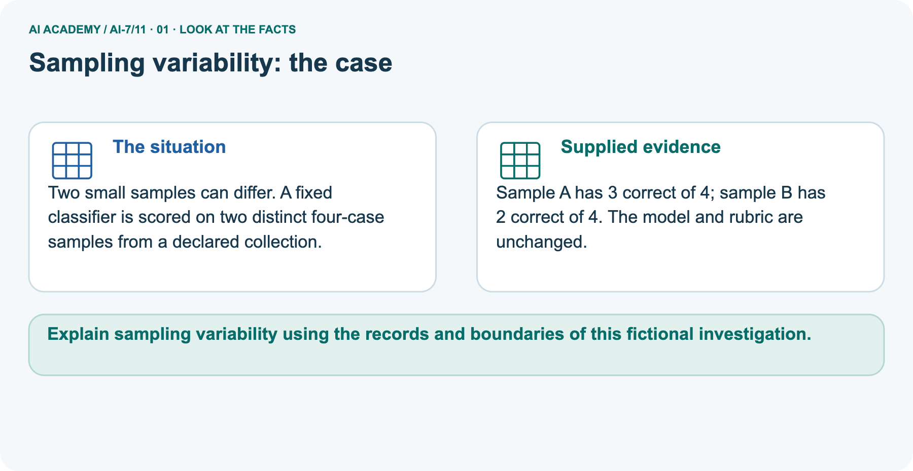
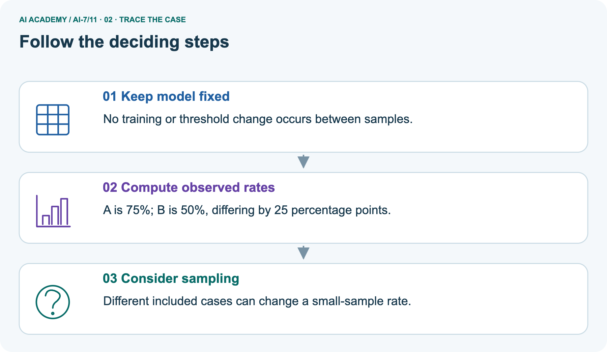
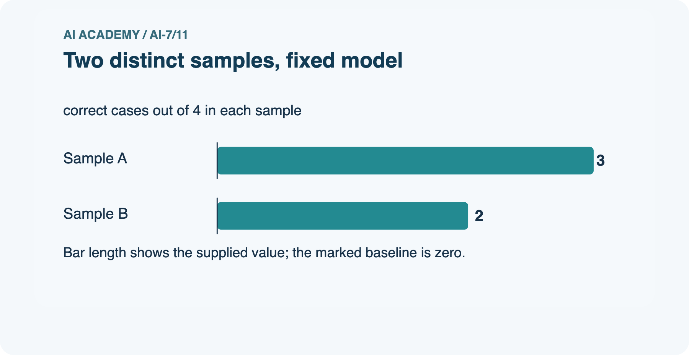
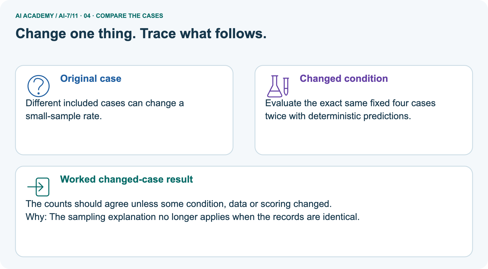
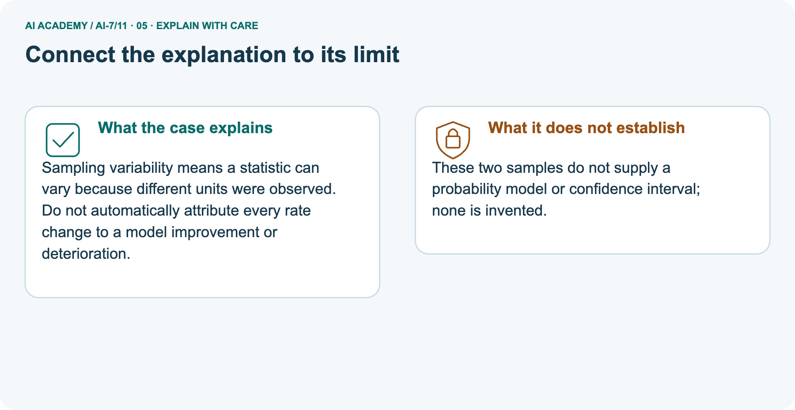
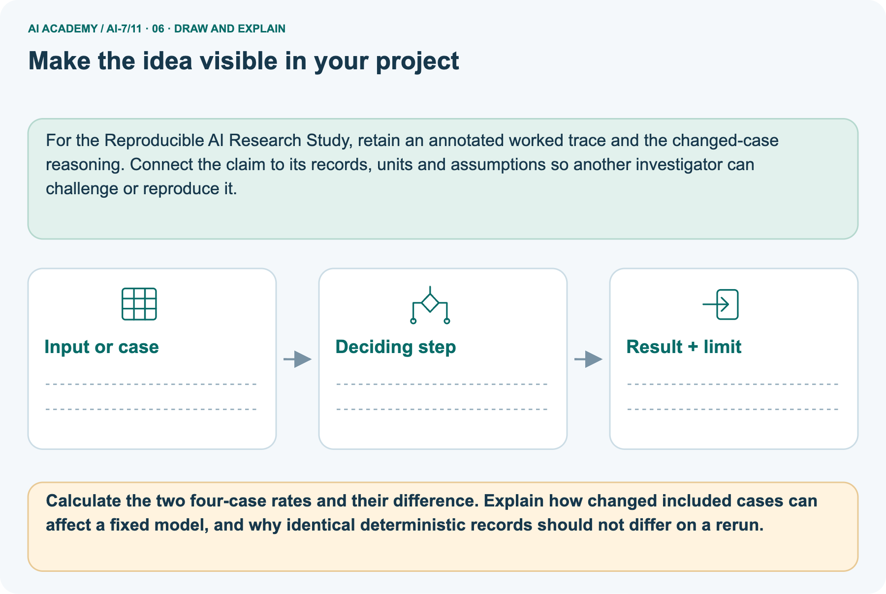

AI Academy · Level 7 · Grade 12 · Week 11 · Workbook
Sampling variability
Learn to understand, design, build, test and explain AI systems responsibly.
Project: Reproducible AI Research Study
THE CONNECTED WEEK
One complete population, sample and statistic record.
Keep IDs, selection rule, complete samples, means, weights and limits on transferred inference together.
Keep one habit: Recall → W1–W3/W5 → independent new-value case → sampling-variability project → delayed return.
Main lesson · Section 1
Recall · Retrieve before notes
Keep this task’s inputs,rule and response together.
Complete task and evidence
Try the recall before opening notes. Then use a different colour or a labelled second line to correct your explanation.
Without opening the old lesson, explain one key idea from Confounders and controls. Give an example and a mistake that the idea helps you avoid.
Without opening the old lesson, explain one key idea from Baselines and fair comparisons. Give an example and a mistake that the idea helps you avoid.
Without opening the old lesson, explain one key idea from Replication and reproduction. Give an example and a mistake that the idea helps you avoid.
Confounders and controls
Baselines and fair comparisons
Replication and reproduction
Main lesson · Section 5
W1 · Explain the current example
Keep this task’s inputs,rule and response together.
Complete task and evidence
Sampling variability means different eligible samples can produce different statistics under fixed population/procedure conditions. Complete known model: U1 and U2 each have value 1; U3 and U4 each have value 3. Choose two distinct IDs uniformly without replacement. Six unordered pairs are equally likely: U1/U2 has mean 1; U1/U3, U1/U4, U2/U3 and U2/U4 have mean 2; U3/U4 has mean 3.
The average of all six means is 2, equal to the known population mean. Four of six pairs have mean 2, so its probability is 4/6 = 2/3. Equal values retain distinct IDs. Enumeration lists possibilities, not six independent observed experiments; draws within a sample without replacement are not independent.
Separate picture fixed classifier/rubric scores 3/4 = 75% and 2/4 = 50% on different four-case samples, 25 percentage points apart. No sampling model or confidence interval is supplied for that picture. Identical deterministic records/predictions/scoring should replay consistently. Code uses exact arithmetic on supplied fixtures, no random draw, live classifier or broad population inference.
Explain the weekly mechanism in your own words. Use the worked scenario to name its input, decision rule and output.
Main lesson · Section 6
W2 · Trace the worked case
Keep the supplied inputs, comparison rule and evidence together.
Complete task and evidence
Sampling variability means different eligible samples can produce different statistics under fixed population/procedure conditions. Complete known model: U1 and U2 each have value 1; U3 and U4 each have value 3. Choose two distinct IDs uniformly without replacement. Six unordered pairs are equally likely: U1/U2 has mean 1; U1/U3, U1/U4, U2/U3 and U2/U4 have mean 2; U3/U4 has mean 3.
The average of all six means is 2, equal to the known population mean. Four of six pairs have mean 2, so its probability is 4/6 = 2/3. Equal values retain distinct IDs. Enumeration lists possibilities, not six independent observed experiments; draws within a sample without replacement are not independent.
Separate picture fixed classifier/rubric scores 3/4 = 75% and 2/4 = 50% on different four-case samples, 25 percentage points apart. No sampling model or confidence interval is supplied for that picture. Identical deterministic records/predictions/scoring should replay consistently. Code uses exact arithmetic on supplied fixtures, no random draw, live classifier or broad population inference.
Population values are 1, 1, 3, 3, with four distinct IDs. Choose two IDs uniformly without replacement. List all six unordered pairs and their means, then find the mean of those means and the chance of obtaining a mean of 2. Show the intermediate steps and give the conclusion with its scope.
| Unordered ID pair | Selected values | Sample mean | Model probability |
|---|---|---|---|
| U1, U2 | 1, 1 | 1 | 1/6 |
| U1, U3 | 1, 3 | 2 | 1/6 |
| U1, U4 | 1, 3 | 2 | 1/6 |
| U2, U3 | 1, 3 | 2 | 1/6 |
| U2, U4 | 1, 3 | 2 | 1/6 |
| U3, U4 | 3, 3 | 3 | 1/6 |
| Summary | Six equally likely ID pairs | Average = (1+2+2+2+2+3)/6 = 2 | P(mean 2) = 4/6 = 2/3 |

Main lesson · Section 7
W3 · Repair a misconception
Keep this task’s inputs,rule and response together.
Complete task and evidence
Sampling variability means different eligible samples can produce different statistics under fixed population/procedure conditions. Complete known model: U1 and U2 each have value 1; U3 and U4 each have value 3. Choose two distinct IDs uniformly without replacement. Six unordered pairs are equally likely: U1/U2 has mean 1; U1/U3, U1/U4, U2/U3 and U2/U4 have mean 2; U3/U4 has mean 3.
The average of all six means is 2, equal to the known population mean. Four of six pairs have mean 2, so its probability is 4/6 = 2/3. Equal values retain distinct IDs. Enumeration lists possibilities, not six independent observed experiments; draws within a sample without replacement are not independent.
Separate picture fixed classifier/rubric scores 3/4 = 75% and 2/4 = 50% on different four-case samples, 25 percentage points apart. No sampling model or confidence interval is supplied for that picture. Identical deterministic records/predictions/scoring should replay consistently. Code uses exact arithmetic on supplied fixtures, no random draw, live classifier or broad population inference.
A report omits this qualification: This finite example is not a general normality guarantee or a model of a biased convenience sample.
Explain how omitting it could change a reader's interpretation, and write an accurate replacement.
Main lesson · Section 9
W5 · Explain the limitation
Keep this task’s inputs,rule and response together.
Complete task and evidence
Sampling variability means different eligible samples can produce different statistics under fixed population/procedure conditions. Complete known model: U1 and U2 each have value 1; U3 and U4 each have value 3. Choose two distinct IDs uniformly without replacement. Six unordered pairs are equally likely: U1/U2 has mean 1; U1/U3, U1/U4, U2/U3 and U2/U4 have mean 2; U3/U4 has mean 3.
The average of all six means is 2, equal to the known population mean. Four of six pairs have mean 2, so its probability is 4/6 = 2/3. Equal values retain distinct IDs. Enumeration lists possibilities, not six independent observed experiments; draws within a sample without replacement are not independent.
Separate picture fixed classifier/rubric scores 3/4 = 75% and 2/4 = 50% on different four-case samples, 25 percentage points apart. No sampling model or confidence interval is supplied for that picture. Identical deterministic records/predictions/scoring should replay consistently. Code uses exact arithmetic on supplied fixtures, no random draw, live classifier or broad population inference.
For the worked scenario, propose one additional case that could reveal a failure, describe its expected outcome before running it, and explain what would need to remain fixed for a fair comparison.
Do not reuse W4 as a new final test after receiving feedback.
Main lesson · Section 4
Try alone · Selected transfer
Keep this task’s inputs,rule and response together.
Complete task and evidence
Population values are 0, 0, 4, 4, with four distinct IDs. Choose two IDs uniformly without replacement. Enumerate all six unordered pairs, calculate their sample means and find their average.
Attempt this case before feedback. Record any help. Earlier examples below are further practice; a case already practised with feedback cannot establish fresh transfer.
Independent case: Apply a new case independently
Main lesson · Section 10
Project · Keep the research evidence
Preserve the question, protocol, observations, analysis and limits.
Complete task and evidence
Add a labelled sampling variability evidence sheet to Reproducible AI Research Study. Show how you can explain the mechanism and terminology of sampling variability.
Use the supplied fictional case and keep its inputs, intermediate steps, calculation or prediction, and limitation. Connect this record to last week’s record; a matching answer without a trace is insufficient.
Main lesson · Section 11
Feedback · Repair and return
Keep this task’s inputs,rule and response together.
Complete task and evidence
Revisit this idea with your teacher after a delay. Familiarity is different from explaining and using it on a changed case.
| Evidence | My record |
|---|---|
| Worked alone / hint / model | |
| First step I repaired and why | |
| New case checked later; date and result | |
| What I can now explain without notes | |
| One remaining question |
Reference bank and extra practice
Choose the reference that helps your next step.
Reference · Supported W2 record
Reference · Section 2
Reference · Supported W2 record
Keep this task’s inputs,rule and response together.
Complete task and evidence
Use W2: Trace the worked case for Sampling variability. Record the answer once; the lesson and workbook refer to the same attempt.
| Given inputs | Procedure I chose | Middle steps | Result and check |
|---|---|---|---|
Extra practice · Individual reasoning check
Reference · Section 3
Extra practice · Individual reasoning check
Keep this task’s inputs,rule and response together.
Complete task and evidence
Use the worked case for Sampling variability. Proposed explanation: “The worked result establishes every future case”. Decide whether this explanation is supported.
Point to the step or supplied fact that decides; explain your repair if needed.
Reference · Earlier W4 response copy
Reference · Section 8
Reference · Earlier W4 response copy
Keep this task’s inputs,rule and response together.
Complete task and evidence
Population values are 0, 0, 4, 4, with four distinct IDs. Choose two IDs uniformly without replacement. Enumerate all six unordered pairs, calculate their sample means and find their average.
Extra practice · Pictured case
Reference · Section 12
Extra practice · Pictured case
Keep this task’s inputs,rule and response together.
Complete task and evidence
Two small samples can differ. A fixed classifier is scored on two distinct four-case samples from a declared collection.
Sample A has 3 correct of 4; sample B has 2 correct of 4. The model and rubric are unchanged.
Calculate the two four-case rates and their difference. Explain how changed included cases can affect a fixed model, and why identical deterministic records should not differ on a rerun.
Support used: alone / hint / worked example. This record is practice evidence.
Project connection: For the Reproducible AI Research Study, retain an annotated worked trace and the changed-case reasoning.
Connect the claim to its records, units and assumptions so another investigator can challenge or reproduce it.






Reference · Project milestone
Reference · Section 13
Reference · Project milestone
Keep this task’s inputs,rule and response together.
Complete task and evidence
Project: Reproducible AI Research Study
Current milestone: Make a transparent first version. Keep a trace of how one input becomes an output; explain the rule or learned component.
For the Reproducible AI Research Study, retain an annotated worked trace and the changed-case reasoning. Connect the claim to its records, units and assumptions so another investigator can challenge or reproduce it.
| Evidence to keep | My record |
|---|---|
| This week’s input and deciding step | |
| Prediction and actual result (or labelled paper trace) | |
| One change since the previous checkpoint and why | |
| One error or limit and the next test |
Extra practice · Predict,check and repair
Reference · Section 14
Extra practice · Predict,check and repair
Keep supported feedback separate from the independent case.
First supported question and optional hint
Two small samples can differ. A fixed classifier is scored on two distinct four-case samples from a declared collection.
Which labelled step matches this detail? Different included cases can change a small-sample rate.
1. Consider sampling
2. Keep model fixed
3. Compute observed rates
Hint if needed: Read the steps in the pictorial case. Match the supplied detail to the stage that performs or records it.
Practice 1: explain the deciding evidence
Check after the first attempt
After your attempt, compare with the supported explanation: Consider sampling Different included cases can change a small-sample rate. Sampling variability means a statistic can vary because different units were observed.
Do not automatically attribute every rate change to a model improvement or deterioration.
Changed-case question and optional hint
Changed-case practice: Evaluate the exact same fixed four cases twice with deterministic predictions. Which conclusion is supported by the supplied facts?
1. The counts should agree unless some condition, data or scoring changed.
2. We can decide the result without examining the changed input or the procedure.
3. This one example guarantees correct results for every future input.
Hint if needed: Use the changed condition and the deciding step in the pictorial trace. The answer must say what follows from those facts.
Practice 2: explain the deciding evidence
Check after the changed attempt
After your attempt, compare with the supported explanation: The counts should agree unless some condition, data or scoring changed. The sampling explanation no longer applies when the records are identical.
Repair and retain the record
Review Confounders and controls (ai-7/10). Goal: Explain the mechanism and terminology of confounders and controls. Short practice: Draw the four condition/background combinations.
Which variables were coupled before, and why would collecting only healthy-white and spotted-blue again leave the confounding unresolved?. Return to this week and explain what you changed.
Review Baselines and fair comparisons (ai-7/8). Goal: Explain the mechanism and terminology of baselines and fair comparisons. Short practice: Calculate 6/8 and 7/8 correctness and name the one-case gain.
Why is giving B the answer key incompatible with an unseen comparison to the simple baseline?. Return to this week and explain what you changed.
Review Replication and reproduction (ai-7/5). Goal: Explain the mechanism and terminology of replication and reproduction. Short practice: Calculate the scores from the original and new four-record sets.
Which activity reproduces saved analysis, which repeats the protocol, and why does a different rerun of the original data need investigation?. Return to this week and explain what you changed.
The browser lab lets you edit the supported Python examples already included in this lesson. Predict first, run, inspect the actual output or error, change one input, then run again.
Keep code, predictions, actual results and a reasoned revision together. On paper, label your result as a trace rather than an execution.
Use Download completed work in the hosted lesson to export your answers, reflections, practice feedback and code-run evidence. Open the HTML copy to read or print it.
Drafts stay in this browser when storage is available; clear drafts on a shared device.
Earlier wording, alternatives and picture transcripts
Use this supported practice once, in the browser or on paper. Keep the reserved independent assessment for a separate first attempt before teacher feedback.
Repair a missing building block
Predict, run and debug
Keep your completed work
Reference · Six-picture response sheets
Reference · Section 15
Reference · Six-picture response sheets
Choose the picture that helps explain the current step.
01. Sampling variability: the case



Two small samples can differ. A fixed classifier is scored on two distinct four-case samples from a declared collection. Supplied facts: Sample A has 3 correct of 4; sample B has 2 correct of 4.
The model and rubric are unchanged.
Point to the given fact that matters most. Explain why it matters.
02. Follow the deciding steps



Keep model fixed: No training or threshold change occurs between samples. → Compute observed rates: A is 75%; B is 50%, differing by 25 percentage points. → Consider sampling: Different included cases can change a small-sample rate.
Point to each numbered stage and explain which recorded input it uses.
03. Two distinct samples, fixed model



Two distinct samples, fixed model. Units: correct cases out of 4 in each sample. Sample A: 3. Sample B: 2.
Read the labels and values. Explain the relationship the model shows.
04. Change one thing. Trace what follows.



Original case: Different included cases can change a small-sample rate. Changed condition: Evaluate the exact same fixed four cases twice with deterministic predictions.
Expected result: The counts should agree unless some condition, data or scoring changed. Reason: The sampling explanation no longer applies when the records are identical.
Predict before checking the worked changed-case result. Name what changed and what the supplied facts allow you to conclude.
05. Connect the explanation to its limit



Sampling variability means a statistic can vary because different units were observed. Do not automatically attribute every rate change to a model improvement or deterioration.
Limit: These two samples do not supply a probability model or confidence interval; none is invented.
Explain the case, then point to a limit on the claim.
06. Make the idea visible in your project



For the Reproducible AI Research Study, retain an annotated worked trace and the changed-case reasoning. Connect the claim to its records, units and assumptions so another investigator can challenge or reproduce it.
Draw your input, deciding step, result and limit. Supported question: Calculate the two four-case rates and their difference.
Explain how changed included cases can affect a fixed model, and why identical deterministic records should not differ on a rerun.
Draw your project trace and justify the deciding step using evidence.